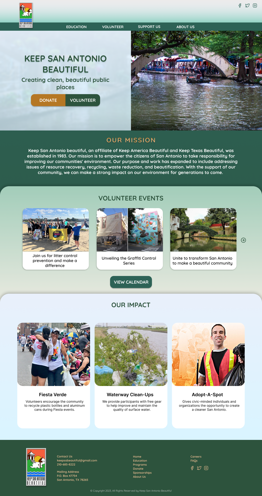
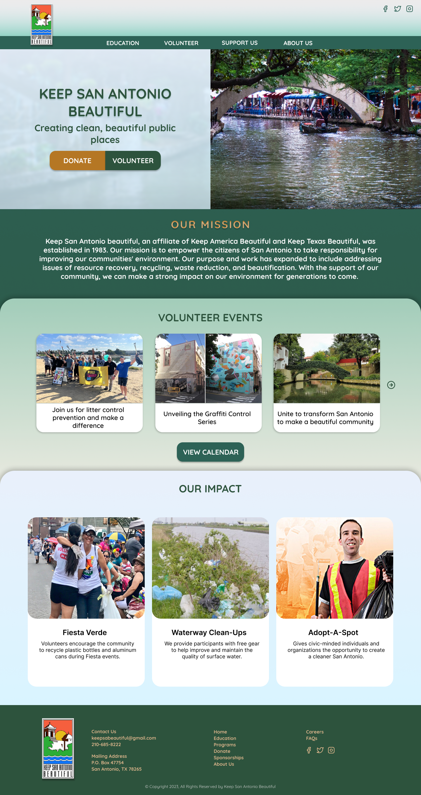

MY WORK
TRIP SKIP TRAVEL APP
Developing an up-to-date mobile app that helps users plan their travels in a post-pandemic era
Developing an up-to-date mobile app that helps users plan their travels in a post-pandemic era
KEEP SAN ANTONIO BEAUTIFUL REDESIGN
Redesigning the UI of the official website of the nonprofit organization ‘Keep San Antonio Beautiful’ with clearer navigation for the user
Redesigning the UI of the official website of the nonprofit organization ‘Keep San Antonio Beautiful’ with clearer navigation for the user
SHELF ESTEEM APP
Create a service for users to lessen food waste by offering virtual refrigerator organization services from vetted and verified food storage & organization experts
Create a service for users to lessen food waste by offering virtual refrigerator organization services from vetted and verified food storage & organization experts
 
